Head Count Reduction in Assembly Area
Location: Jatco Nissan, CVT8
Impact: +24% OOE Efficiency
➡️ Optimization project reducing labor requirements while increasing OOE efficiency.
Production
Direct Labor Cost
Industrial
Enterprise: Jatco Mexico
Location: Assembly CVT8 in Site 1
Contest: QC-Story Contest 2025
Problem: The CVT8 assembly area showed an excess of personnel, which caused low operator efficiency and a direct negative impact on Direct Labor Cost. Monthly reports revealed a downward trend in efficiency, highlighting the need for optimization.
Solution: Through time studies and line balancing, operator distribution was redesigned to maximize workforce utilization. Documentation of workstations was updated and validated to ensure operators could perform the reassigned tasks. In collaboration with Production, targeted training sessions were provided to employees to guarantee adaptation to the new workflow.
Impact: 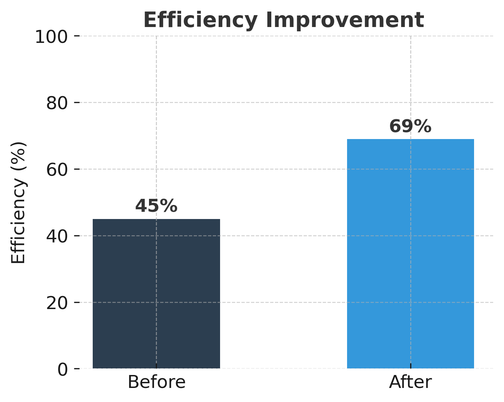
My role: I led the validation of time studies, designed the new operator layout, performed ergonomic and distance analysis, assessed risk scenarios under varying demand, and evaluated the financial impact of improvements on Direct Labor Cost and workforce efficiency.
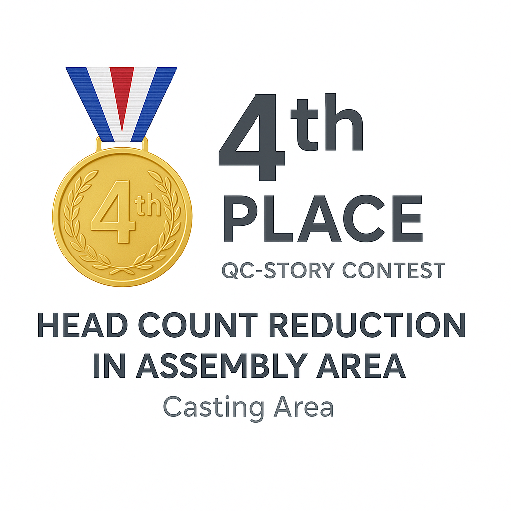
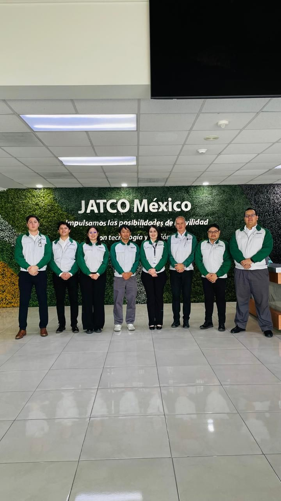
Scrap Reduction
Location: Jatco BRP | Casting
Impact: -93% Scrap
➡️ Implemented quality and process improvements in Casting, achieving significant scrap reduction.
Production
Engineering
Industrial
Enterprise: Jatco Mexico
Location: Casting BRP in Site 1
Contest: QC-Story Contest 2025
Problem: In the casting area, a very high scrap rate was observed, mainly caused by internal porosity defects. To contain the issue, a temporary inspection process was implemented. However, this required additional workforce, which increased direct labor costs and impacted efficiency due to the extra time and resources consumed.
Solution:
A series of process optimization trials were carried out in the casting equipment, adjusting
key parameters of the injection and cooling stages to achieve uniform solidification and reduce internal defects.
After a trial period, the process proved stable, and a time study supported the removal of the
temporary workforce, reducing costs and ensuring consistent product quality.
Impact: 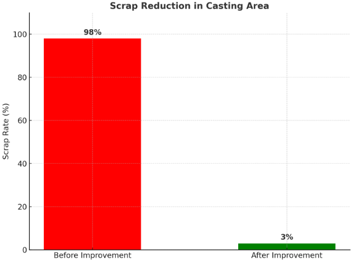
My role: I coordinated the setup of the temporary inspection process, conducted time validation and efficiency analysis under abnormal conditions, and monitored production volumes to ensure compliance with targets. I also ensured product quality during the testing phase and led the final validation of the optimized process, supporting the workforce reduction and achieving both cost savings and efficiency improvements.
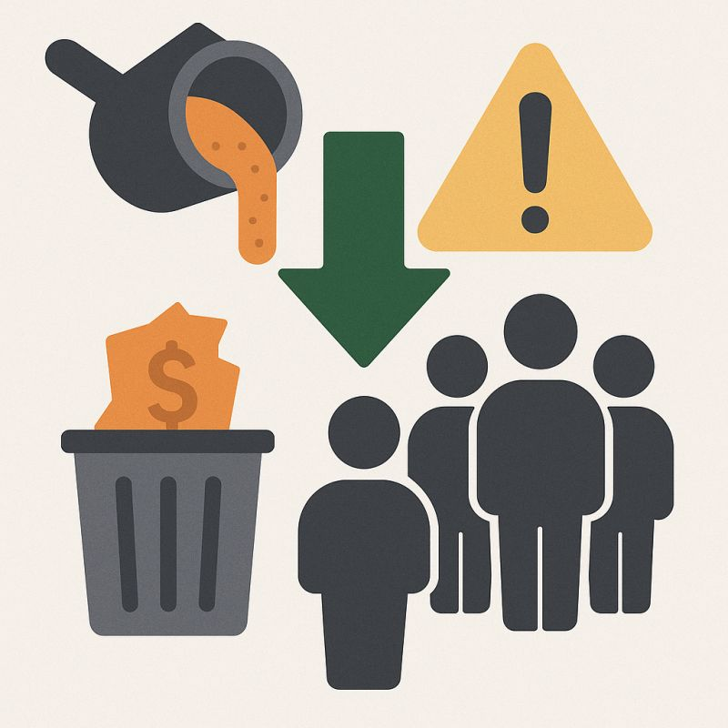
OOE Segregation by Model
Location: Jatco Nissan | Casting & Gears & Heat Treatments
Impact: +10% OOE (All Models)
➡️ Segregated workforce efficiency by model, comparing required hours vs. worked hours to optimize resource allocation and improve OOE.
Lean
Industrial
Enterprise: Jatco Mexico
Location: Jatco Site 1
Contest: QC-Story Contest 2025
Problem: At Jatco, Direct Labor Cost (DLC) was historically calculated by model, but workforce efficiency was always grouped as a single value. This meant that Model 1, Model 2, and Model 3 shared the same efficiency figure, even though their labor costs were different. As a result, monitor models were penalized, and the plant was losing money due to inaccurate efficiency allocation.
Solution: The project established a method to segregate workforce efficiency by model. Required hours were calculated for each model individually, providing a baseline of how much time should be consumed. In parallel, actual worked hours were obtained based on real production and proportionally distributed across total worked hours. This allowed the company to align cost per model with its actual workforce efficiency, eliminating distortions and ensuring a fair representation of labor usage.
Impact: 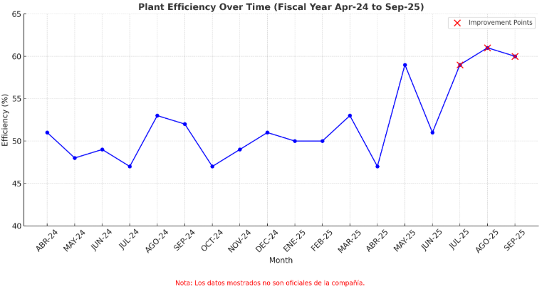
My role: I led the project end-to-end, validating and implementing the new method to segregate workforce efficiency by model. I conducted months of trials, developed impact and risk calculations, and designed the methodology to compare required vs. worked hours.
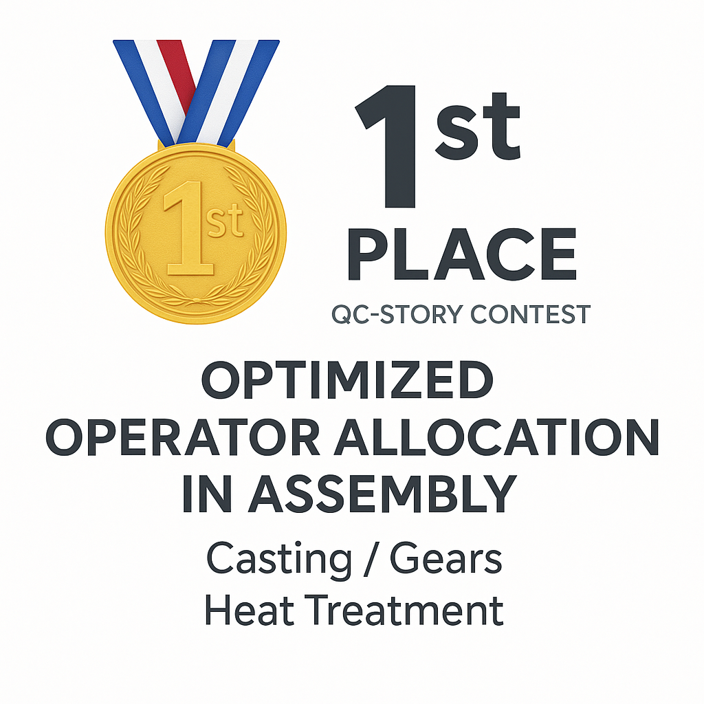
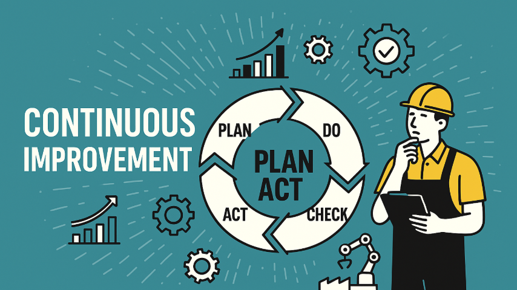
OEE analysis
Location: Jatco Nissan | All Areas
Impact: -200 hrs/man month
➡️ Validated process changes with trial runs and time studies, ensuring stable production results.
Production
Industrial
VBA
Enterprise: Jatco Mexico
Location: Jatco Site 1 & Site 2
Contest: DX-Contest 2024
Problem: The calculation of Overall Equipment Efficiency (OEE) was carried out in different ways across the plant’s areas, resulting in inconsistent data and unreliable metrics. This inconsistency limited the ability to properly identify process failures, measure losses, analyze downtime, and calculate costs with accuracy.
Solution: A standardized system was developed through the creation of an official OEE format for the plant. This format allowed the structured recording of time studies, failure analysis, and downtime tracking. By consolidating and standardizing the data entry process, the new format provided consistent and accurate results for OEE, process losses, failure identification, and cost evaluation, applicable across production and other areas.
Impact: 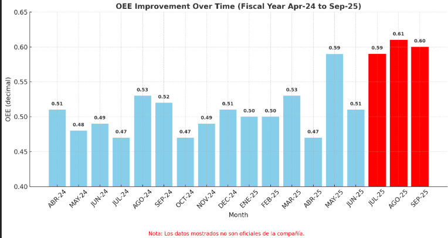
My role: I designed and developed the official OEE format, validated it through field testing, and implemented it directly in production lines. I was responsible for ensuring that the tool could capture accurate and consistent data, verifying its effectiveness through industrial engineering practices, and supporting its adoption as the official method for OEE analysis within the plant.
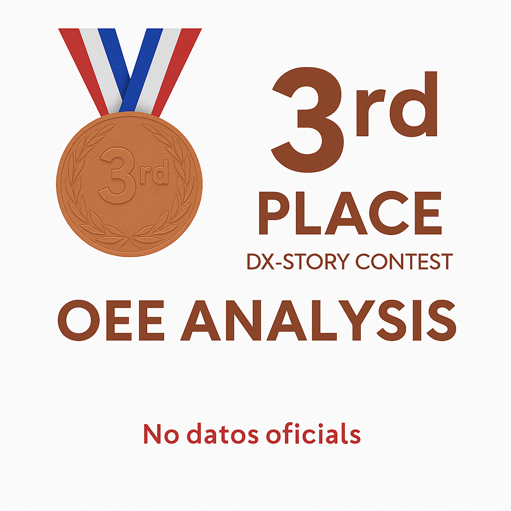
Auto Head Count Calculator
Location: Jatco Nissan | All Areas
Impact: -1500 hrs/man month
➡️ Automated the calculation process, ensuring consistency and accuracy in headcount planning.
Industrial
VBA
Enterprise: Jatco Mexico
Location: Jatco Site 1 & Site 2
Contest: DX-Contest 2023
Problem: At Jatco Mexico, headcount calculation based on production volume was not standardized, leading to inaccuracies, labor cost losses, and excessive manual effort. Staff, managers, and validators invested unnecessary time, impacting both direct and indirect labor efficiency.
Solution: Developed and implemented an automated Excel application using Visual Basic for Applications (VBA). The tool standardized the process, requiring only data input from users, while ensuring precision and consistency in the calculations.
My role: I was fully responsible for the design, coding, and implementation of the VBA tool, including front-end and back-end logic, as well as extensive testing. I ensured usability, accuracy, and integration into daily operations, enabling faster processes, reliable headcount analysis, and stronger identification of overstaffing issues.
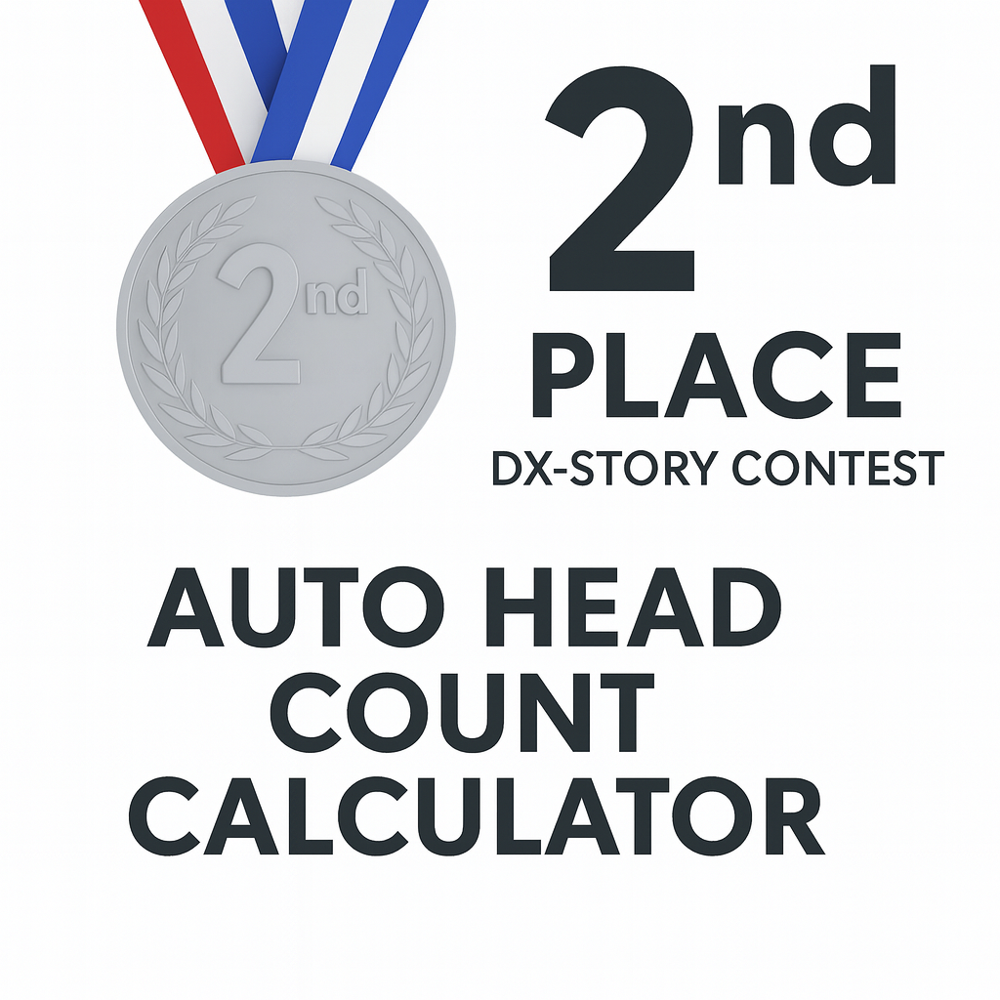
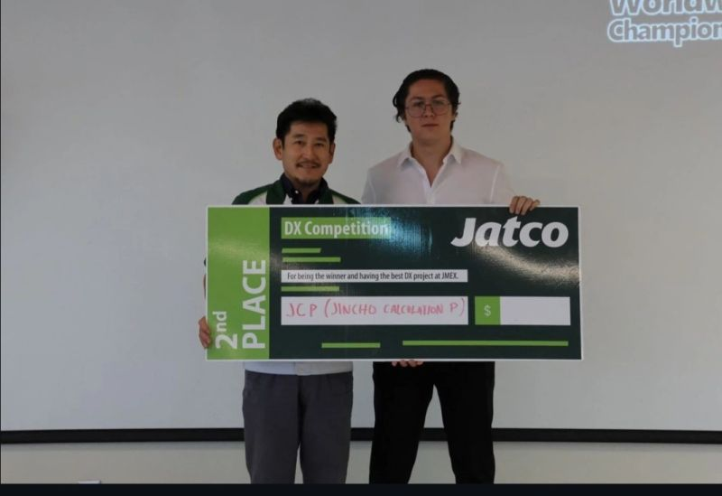
Judge Registration System
Location: Jatco BRP | Casting
Impact: +15% OOE Efficiency
➡️ Designed a standardized system for judge registration, improving traceability and reliability.
Quality
VBA
Industrial
Enterprise: Jatco Mexico
Location: Jatco Casting BRP Site 1
Contest: Intern Contest
Problem: In the Casting area for the BRP project, machine judgment records (OK/NG) were kept manually on paper. This created risks of operator errors when logging results, misplacing consecutive pieces, and ultimately losing traceability of the product.
Solution: A program was developed using Visual Basic for Applications (VBA), implemented through a touchscreen interface. Operators could directly select the machine’s judgment for each piece, while the system automatically logged consecutive numbers, allowed comments, and ensured continuous digital tracking of records.
My role: I led the full development cycle of the system, from coding, testing, and implementation to the equipment purchase and integration with the quality lab. I ensured the program’s usability for operators, its accuracy for traceability, and its reliability for long-term use in the casting process.
Automatic Direct Labor Cost Forecast
Location: Jatco Nissan | All Models
Impact: -750 hrs/man month
➡️ Developed a forecasting tool to simplify cost analysis and decision-making.
Industrial
VBA
Direct Labor Cost
Enterprise: Jatco Mexico
Location: Jatco Site 1 & Site 2
Contest: Intern Contest
Problem: Forecasting of Direct Labor Cost for upcoming months was done manually in Excel, requiring excessive time and producing results that were often inaccurate. This created risks of unrealistic projections that failed to provide reliable insights for decision-making.
Solution: A forecasting system was developed using Excel with Visual Basic for Applications (VBA). The tool automatically collected data from standardized files, validated it, and performed calculations without requiring user intervention. Users only had to analyze the results, eliminating manual data entry and validation errors, while significantly reducing preparation time.
My role: I was responsible for the design, development, and implementation of the VBA program, as well as the standardization of related formats. I conducted a three-month trial and validation phase to ensure the accuracy, reliability, and efficiency of the tool before full integration.
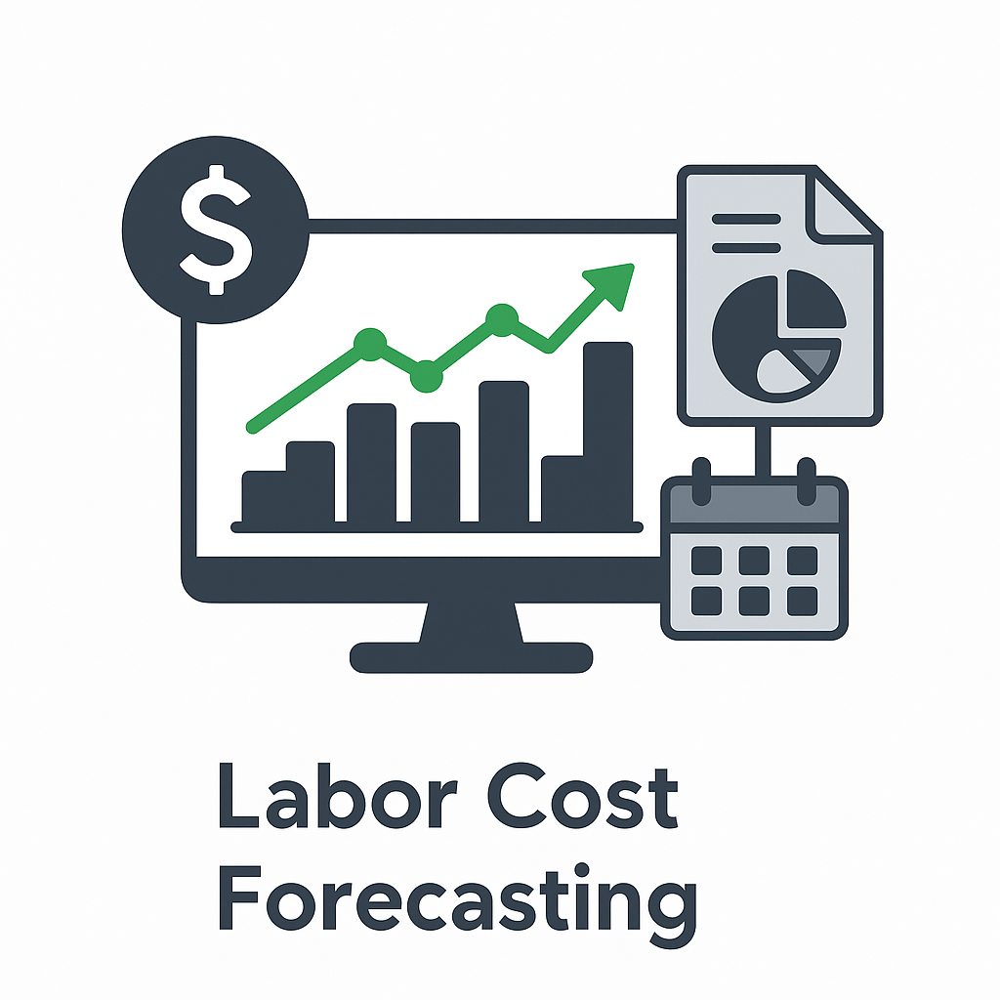
Implementation of new Production Lines
Location: Jatco (New Clients) | --
Impact: +30% OOE Efficiency
➡️ Coordinated the installation of new lines, enabling smooth startup of projects.
Projects
Industrial
Lean
Enterprise: Jatco Mexico
Location: New Projects
Contest: Sales Monitor Design
Problem: For the implementation of new projects, the Sales Monitor document did not account for the exact number of direct personnel required, leading to poor efficiency at startup and non-compliance with Direct Labor Cost targets.
Solution: A new validation format was created in coordination between Japan and Mexico to include the calculation of required direct operators as well as supporting staff (maintenance, supervisors, leaders, etc.). This improved planning, prevented hidden inefficiencies, and aligned project launches with cost requirements.
My role: I led the validation, creation, and implementation of this format, ensuring its adoption during project planning and launch. I also coordinated monthly reviews with Japan as part of audits, presenting results to directors to confirm that projects would not negatively impact customer cost commitments.
 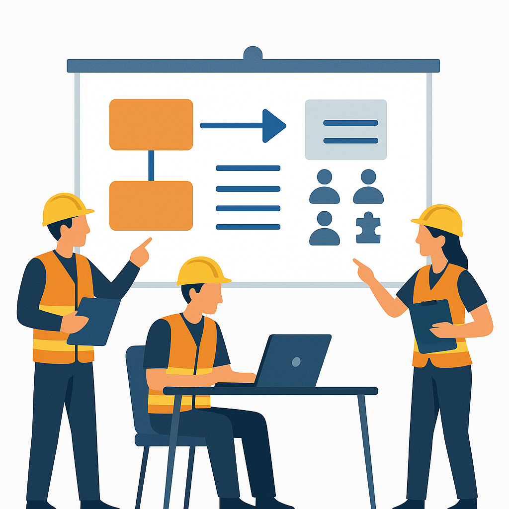
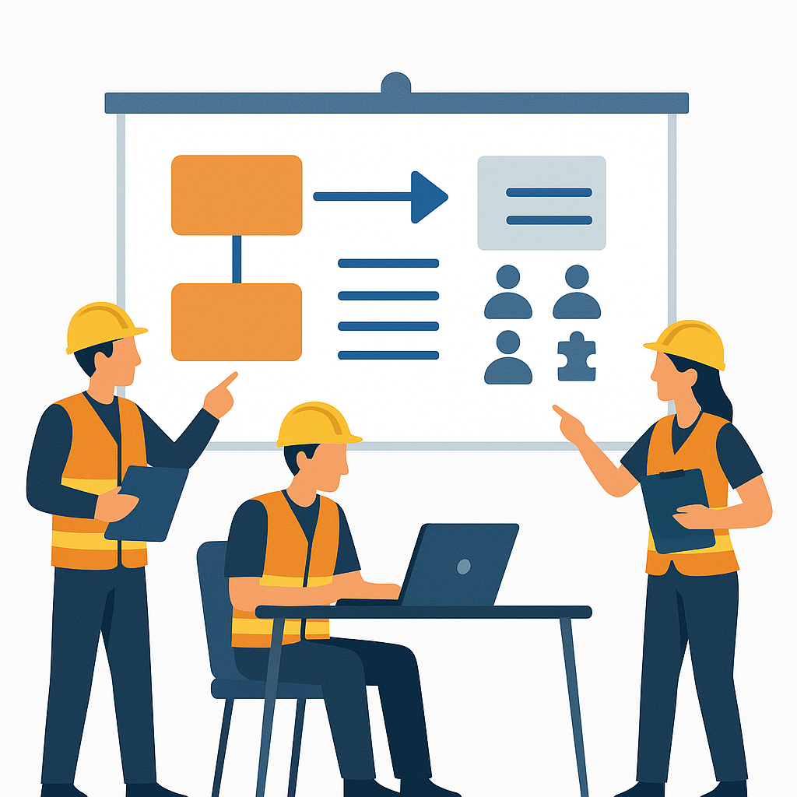